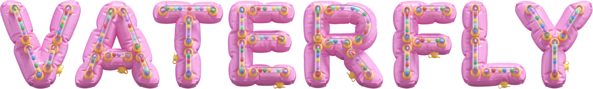
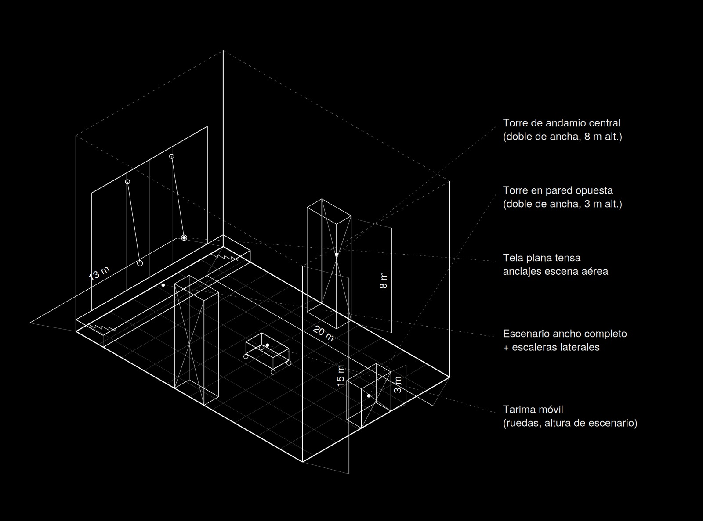

Plano técnico · contenido privado
Entrar
Contraseña incorrecta
VATER
FLY
PLANO TÉCNICO 3D · SALA 20 × 13 × 15 m · GUION v2026-08-31
Isométrica
Planta
Desde el público
Frente escenario
Desde escenario
Backstage
Lateral
Desde torre 3 m
Estructura
Escena
Cotas
Etiquetas
Luces
Proyección
Techo
Modo show
Medir
Pausar
Plano original
Según plano
Activo en la escena
Propuesta de uso · a validar
Medidas relevadas del plano isométrico. Profundidad y altura de escenario estimadas. Tocá un elemento para ver su ficha.
Plano original · esquema isométrico
Cerrar
